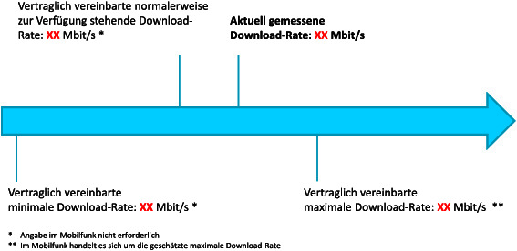
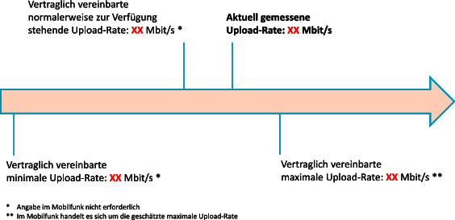

TKTransparenzV
Ausfertigungsdatum: 19.12.2016
Vollzitat:
"TK-Transparenzverordnung vom 19. Dezember 2016 (BGBl. I S. 2977), die durch Artikel 45 des Gesetzes vom 23. Juni 2021 (BGBl. I S. 1858) geändert worden ist"
| Stand: | Geändert durch Art. 45 G v. 23.6.2021 I 1858 |
(+++ Textnachweis ab: 1.6.2017 +++)
| 1. | Name des Anbieters: | |
| 2. | Datum/Uhrzeit: | |
| 3. | Name des Endnutzers: | |
| 4. | Adresse1 : | |
| 5. | Ergebnis zur Download-Rate: | |
|  | ||
| 6. | Tatsächlich gemessene Datenübertragungsrate im Verhältnis zur vertraglich vereinbarten (geschätzten) maximalen Datenübertragungsrate für den Download: | % |
| Die vertraglich vereinbarte normalerweise zur Verfügung stehende Download-Rate wurde [erreicht/nicht erreicht]. | ||
| 7. | Ergebnis zur Upload-Rate: | |
|  | ||
| 8. | Tatsächlich gemessene Datenübertragungsrate im Verhältnis zur vertraglich vereinbarten (geschätzten) maximalen Datenübertragungsrate für den Upload: | % |
| Die vertraglich vereinbarte normalerweise zur Verfügung stehende Upload-Rate wurde [erreicht/nicht erreicht]. | ||
| 9. | die Paketlaufzeit: | |
| 10. | Erläuterungen des [NAME DES ANBIETERS], welche Faktoren das Messergebnis beeinflussen können [optional]: | |
| 11. | Vertraglich vereinbarte Entschädigungs- und Erstattungsregelungen sowie Sonderkündigungsrechte: | |